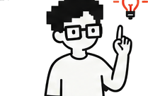
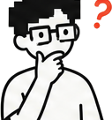

MarTech
หน้านี้ไม่สอนทฤษฎี — เอาของที่ใส่เข้าไปจริงมาวางให้ดูทั้งหมด รูปที่ใช้ prompt ที่พิมพ์ ค่าที่ตั้ง แล้วผลที่ได้ออกมาเป็นอย่างนี้ ใครอยากทำตามก็ก๊อปไปได้เลย


โมเดล: Gemini Omni Flash 1.1 (โหมด reference-to-video) ผ่าน Higgsfield · สั่งงานผ่าน Claude Cowork · ไม่มีการตัดต่อเพิ่ม ไม่มีการเลือกเทคจากหลายรอบ — นี่คือรอบแรก
prompt ทั้งหมดมี 6 ส่วน เรียงตามนี้ทุกครั้ง — ส่วนที่คนมักลืมคือ ส่วน 4 กับ 6 แล้วก็สงสัยว่าทำไมได้สำเนียงเพี้ยนกับมีเพลงโผล่มา
ไม่มีค่าลับ ตั้งแค่นี้

ประเด็นที่คนมองข้าม — ความยากไม่ได้อยู่ที่ prompt แต่อยู่ที่เลือกโมเดล prompt เดียวกันนี้ใส่โมเดลอื่นได้ผลตั้งแต่ "ดีพอ" จนถึง "พูดเขมร" ดูผลทั้ง 11 ตัวได้ที่ Model Compare

อย่าลืมเรื่องสิทธิ์รูป — รูปคนที่ใช้ต้องได้รับอนุญาตแล้ว รูปในหน้านี้ใช้เพื่อการทดสอบ ถ้าจะทำจริงให้ใช้รูปพรีเซนเตอร์หรือพนักงานของโครงการเอง